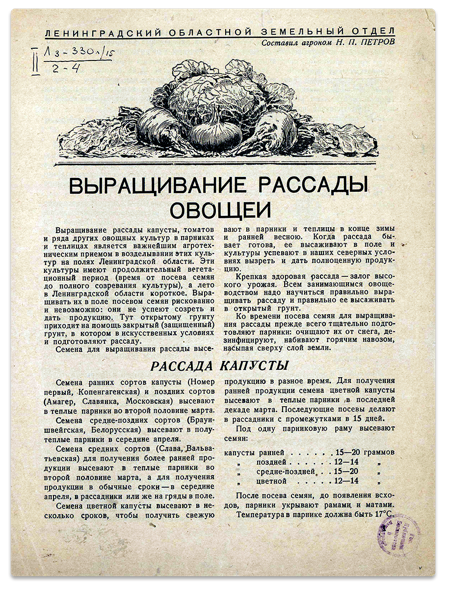
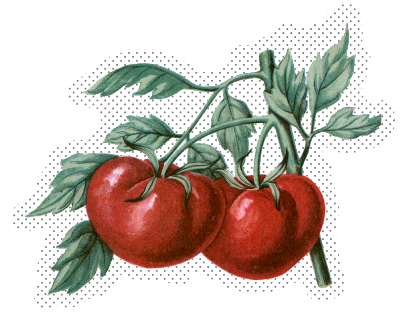

Как выращивать овощи в квартире?
Многие решили провести
внезапные «каникулы» на даче.
Сейчас старый, добрый огород
на чистом воздухе — одно из лучших мест пребывания.
Перед тем, как туда переезжать,
предлагаем освоить несколько азов садоводства.

Как выращивать помидоры в квартире?
Выращивание томатов
на индивидуальном огороде
Издательство Ленинград, 1943.
